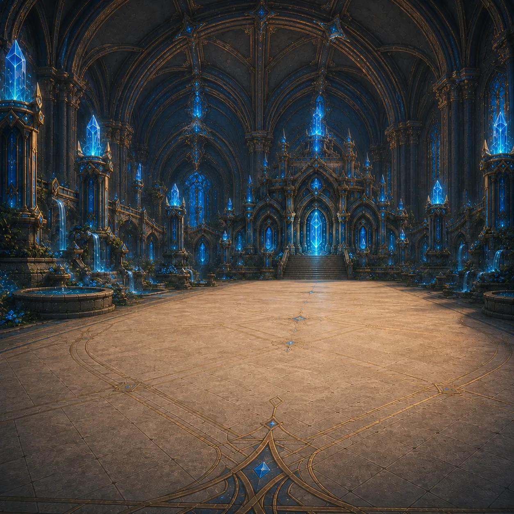
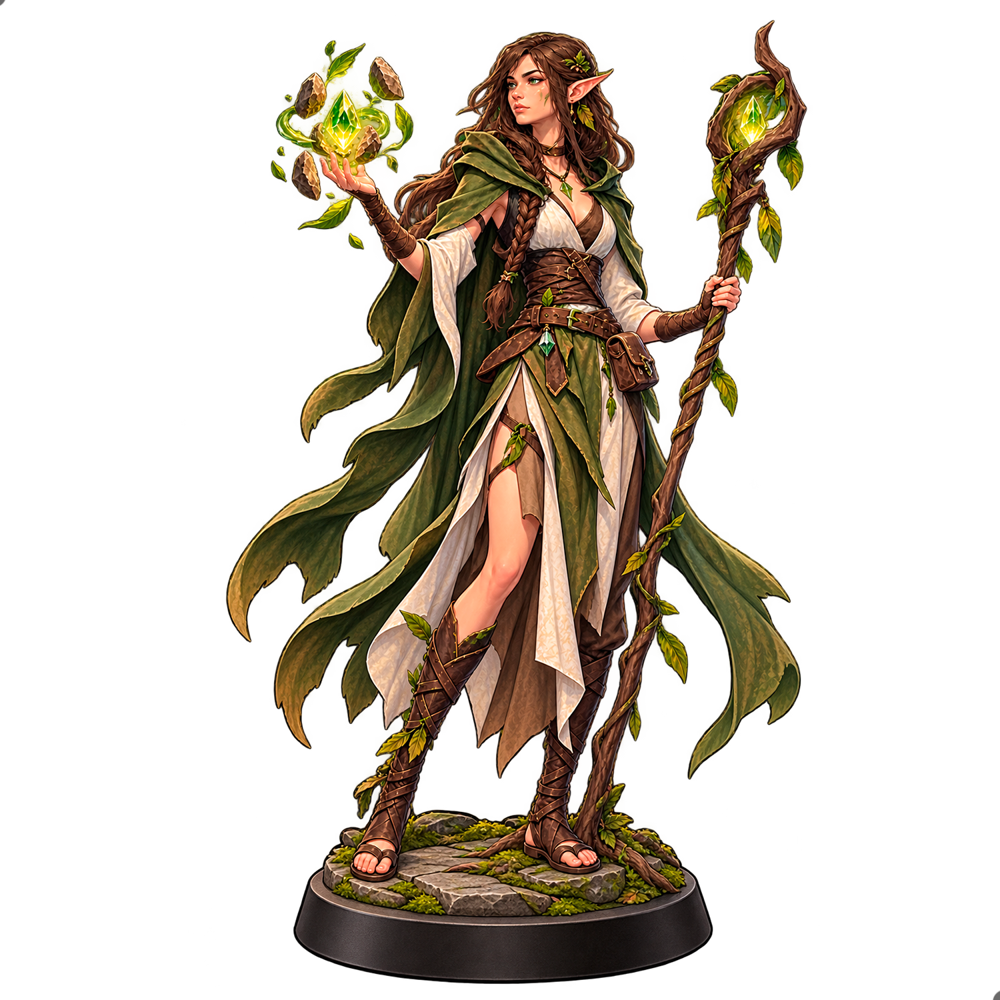
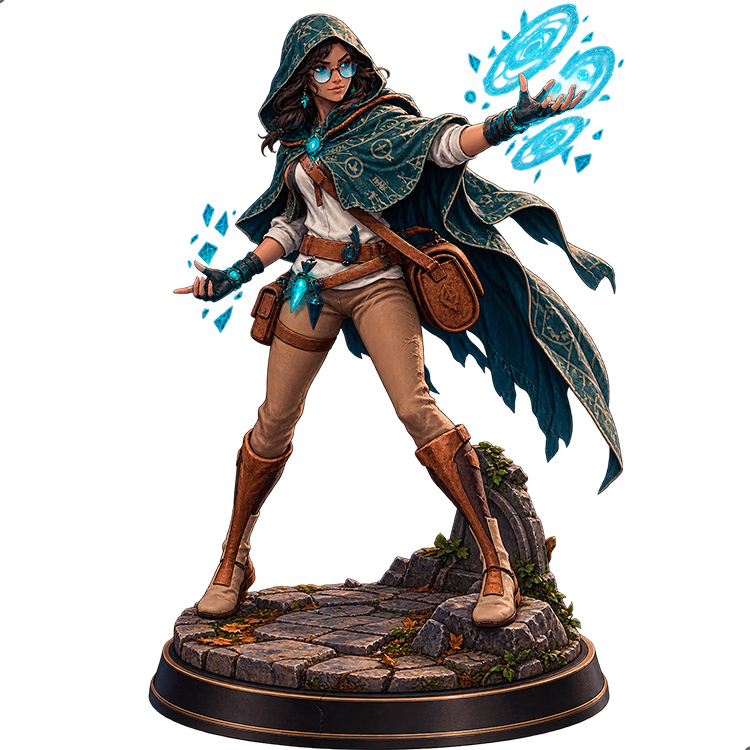

ARQUITECTURA NUEVA · ETAPA 1
El combate empieza aquí. Cliente visual separado del motor y del servidor. Esta pantalla es una vista de preparación; las reglas de combate y los modelos 3D se integrarán en las próximas etapas.
Comprobando definiciones…

Escenario de Kiara · vista previa 2D existente

KASTER ALIADO Lioren Definición en preparación
VS

KASTER RIVAL Kiara Décima Aprendiz de Enigma
Conexión al motor GitHub Pages muestra el frontend. Para crear una sesión real necesitamos el backend desplegado en un servidor Node.js.
Dirección del backend (cuando esté desplegado) Conectar servidor Crear sesión de Aventura No hay servidor configurado. Las partidas estarán disponibles al desplegar el backend.
Sin simulación falsa: el cliente nunca decide daño, movimiento ni victoria.